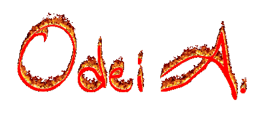

JUEGOS
Estrategia
1) Damas
2) Ajedrez
3) Hundir la flota
4) Solitario de bolas
5) Tetris
6) 3 en raya
7) El ahorcado
8) Torres
9) Cuadrados
10) Botón manía
11) Uncheck los check
Memoria
1) Recuerda los rasgos
2) Parejas
Reflejos y Velocidad
1) Izquierda derecha
2) Columnas
3) Reflejos Boton
4) Reflejos Colores
5) Velocidad
6) 20 Sec
7) Pong
Azar
1) Piedra papel o tijeras
UTILIDADES
1) Calculadora
2) Porcentaje
3) Regla de 3
ABSURDAS
1) Mr. Potato
2) Compatibilidad
3) Space
